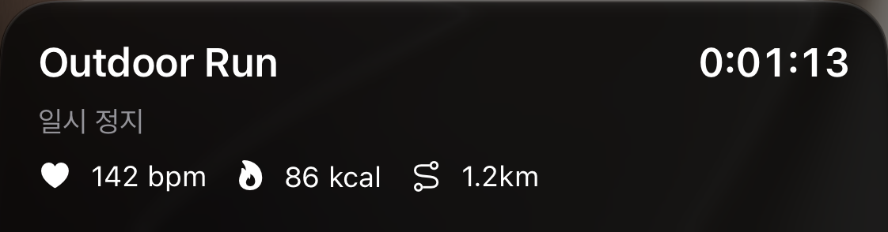
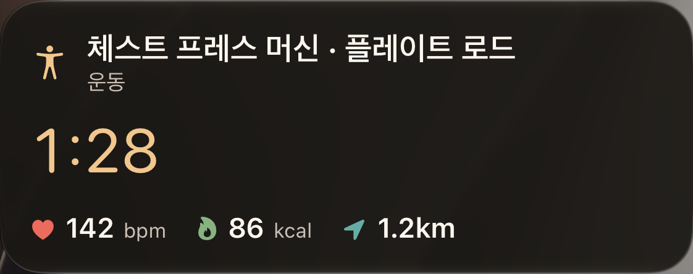

실제 캡처 대기
실제 캡처 대기
실제 캡처 대기
실제 캡처 대기
실제 캡처 대기
실제 쌍 기기 검증 대기
2026-10-30 운동별 아이콘 구현: 새 캡처 미완료. 초기 공간 부족 해소 후 실행한 시스템 UI도 저장소 시뮬레이터 잠금 60초 대기로 시작하지 못했습니다. 러닝·사이클·근력 및 상태별 아이콘은 이전 PNG로 검증하지 않습니다.
최신 구현은 상태 행에 DUNE 워드마크를 추가했습니다. 아래 세 이미지는 워드마크 추가 전의 실제 캡처이며 현재 구현의 캡처가 아닙니다. Xcode 결과 정리 장애가 해소되지 않아 새 캡처는 대기 중입니다.
2026-10-25의 새 배치입니다. 큰 경과 시간과 구분된 지표를 적용한 iPhone 알림 센터의 진행·일시 정지·긴 근력 운동명 세 상태를 다시 캡처했습니다. DEBUG 시드로 실행한 실제 시스템 요소의 원본 PNG입니다.
테스트 메서드는 3건 통과·연결 대기 1건 실패했습니다. Xcode 결과 정리가 멈춰 실행기는 124로 종료됐으며, 완료된 결과 번들이 아닙니다. 기존 PNG를 재사용하지 않고 중단된 번들의 원본 PNG 데이터 세 장을 그대로 보존했습니다. 연결 대기 fixture 수정은 미검증입니다.
캡처 출처와 검증 범위 · 상태별 기록 · 레이아웃 기준 시안


iPad, Duo 접힘·펼침, Watch small family도 미캡처입니다. DEBUG 시드의 SpringBoard 알림 센터 화면과 실제 잠긴 iPhone·Watch 쌍 기기 검증은 서로 다른 출처로 기록합니다.